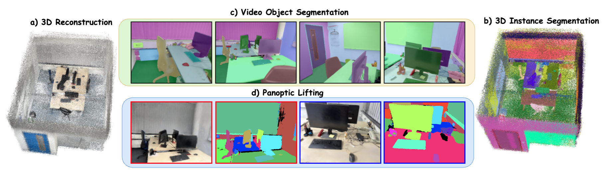
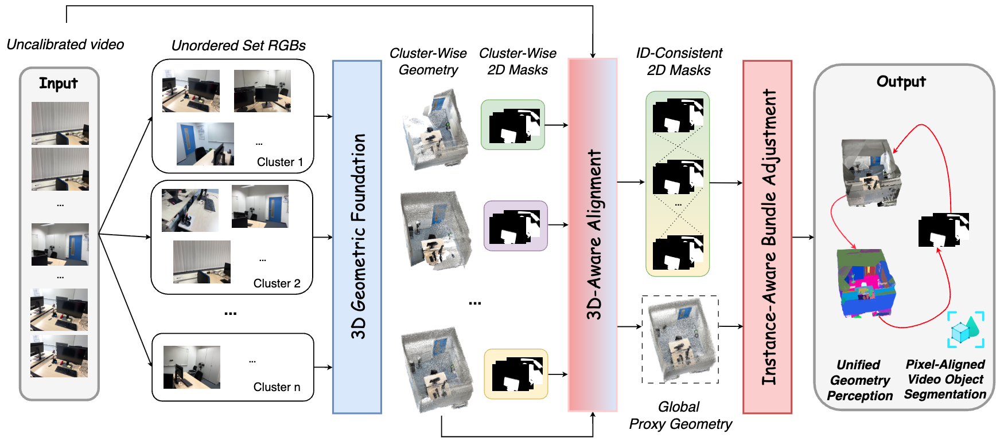

1University of Maryland, College Park 2Dolby Laboratories

We present Scale3D, a unified framework for scalable 3D reconstruction and scene understanding from complex and long image sequences. Existing methods typically emphasize either geometric reconstruction or object-level understanding, but struggle to maintain both global geometric consistency and coherent instance identities over hundreds to thousands of views. Our key insight is to exploit their mutual synergy: geometry provides a robust basis for cross-view object association, while perception regularizes and refines geometry. Scale3D decomposes long video into overlapping clusters, reconstructs cluster-wise geometry and 2D segmentation masks, and introduces a 3D-Aware Alignment module to align local predictions into a global proxy geometry while recovering temporally coherent, globally ID-consistent video object segmentation. We further propose Instance-Aware Bundle Adjustment, leveraging dense instance-consistent correspondences to refine the camera poses and geometry. We evaluate Scale3D on ScanNet200 and ScanNet++v2 across three different benchmarking tasks: 3D reconstruction, class-agnostic 3D instance segmentation, and panoptic lifting for novel-view rendering. It achieves state-of-the-art results, improving AUC@30 by 5%, AP by 11%, and Panoptic Quality by 10%. Overall, our results highlight the importance of jointly modeling geometry and perception for scalable scene reconstruction and understanding over long image sequences with hundreds to thousands of views.

We decompose a given RGB video sequence into overlapping frame clusters and apply a geometric foundation model to obtain cluster-wise geometries and 2D segmentation masks. Our 3D-Aware Alignment module then aligns the fragmented cluster-wise predictions into a unified global proxy geometry and temporally consistent video object segmentation. These consistent 2D priors, together with the proxy geometry, are further used to refine the scene representation through Instance-Aware Bundle Adjustment. The final output is a globally consistent 3D reconstruction with temporally coherent, ID-consistent object segmentation.
| Method | GT Geometry |
ScanNet200 | ScanNet++v2 | ||||||||||
|---|---|---|---|---|---|---|---|---|---|---|---|---|---|
| AP↑ | AP50↑ | AP25↑ | AR↑ | RC50↑ | RC25↑ | AP↑ | AP50↑ | AP25↑ | AR↑ | RC50↑ | RC25↑ | ||
| 1. Direct Lifting [44] | × | 1.6 | 3.5 | 8.9 | 4.9 | 7.2 | 13.1 | 0.3 | 0.9 | 1.4 | 3.5 | 4.6 | 5.9 |
| 2. SAM3D [44, 39] | × | 5.2 | 12.7 | 24.7 | 16.6 | 33.3 | 52.3 | 3.3 | 8.8 | 18.9 | 10.9 | 24.4 | 43.4 |
| 3. Open3DIS [1, 44] | × | 7.9 | 18.3 | 34.5 | 17.3 | 32.1 | 47.3 | 7.7 | 16.5 | 29.8 | 14.2 | 25.4 | 37.1 |
| 4. PanSt3R [21] | × | 2.1 | 4.2 | 11.1 | 5.6 | 10.3 | 16.1 | 1.5 | 2.9 | 5.7 | 5.2 | 8.9 | 10.6 |
| 5. Scale3D | × | 17.1 | 32.7 | 48.4 | 30.8 | 56.6 | 79.4 | 18.1 | 33.8 | 47.2 | 32.3 | 57.8 | 76.7 |
| 6. Direct Lifting [44] | ✓ | 4.8 | 15.3 | 40.1 | 22.5 | 53.4 | 79.5 | 4.3 | 10.1 | 28.9 | 18.5 | 37.2 | 65.9 |
| 7. Felzenszwalb [43] | ✓ | 4.5 | 9.3 | 26.1 | 8.9 | 18.3 | 50.3 | 4.2 | 8.9 | 22.1 | 8.2 | 17.4 | 42.4 |
| 8. SAM3D [44, 39] | ✓ | 6.7 | 21.7 | 46.4 | 21.6 | 49.9 | 77.6 | 4.7 | 13.0 | 33.0 | 17.6 | 36.8 | 60.6 |
| 9. Open3DIS [1, 44, 43] | ✓ | 29.1 | 44.0 | 49.1 | 55.5 | 83.2 | 92.1 | 21.8 | 38.9 | 46.5 | 42.3 | 75.1 | 88.9 |
| 10. PanSt3R [21, 43] | ✓ | 9.9 | 28.4 | 48.1 | 20.1 | 45.2 | 69.9 | 8.2 | 25.3 | 40.1 | 24.7 | 49.9 | 72.1 |
| 11. Scale3D [43] | ✓ | 31.5 | 48.2 | 55.5 | 58.6 | 85.2 | 93.1 | 28.4 | 43.9 | 49.3 | 54.2 | 82.7 | 92.1 |
Left drag: rotate | Right drag: pan | Wheel / trackpad: zoom
Left drag: rotate | Right drag: pan | Wheel / trackpad: zoom
Left drag: rotate | Right drag: pan | Wheel / trackpad: zoom
Left drag: rotate | Right drag: pan | Wheel / trackpad: zoom
Left drag: rotate | Right drag: pan | Wheel / trackpad: zoom
Left drag: rotate | Right drag: pan | Wheel / trackpad: zoom
Left drag: rotate | Right drag: pan | Wheel / trackpad: zoom
Left drag: rotate | Right drag: pan | Wheel / trackpad: zoom
Left drag: rotate | Right drag: pan | Wheel / trackpad: zoom
Left drag: rotate | Right drag: pan | Wheel / trackpad: zoom
Left drag: rotate | Right drag: pan | Wheel / trackpad: zoom
The source code is built upon Open3DIS, PanSt3R, MERG3R and Gaussian Grouping.
We thank Tuan Duc Ngo, Lojze Zust, Heechan Yoon, Ruohan Gao for early valuable discussions.
We thank Trinh Huynh for valuable help on the demo.